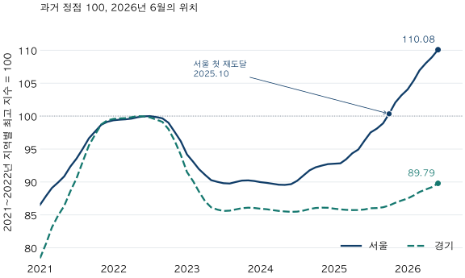

가격의 긴 흐름 · 고점 재도달과 반등의 분모
2026년 6월, 서울·경기 아파트는 과거 고점을 회복했을까?
2026년 6월 KB 월간 아파트 지수로 서울·경기의 과거 고점 재도달을 비교합니다. 저점 대비 반등률과 고점까지 필요한 상승률, 회복률의 서로 다른 분모와 명목 회복의 한계를 확인하세요.
분석 기간 · 2021년 1월~2026년 6월 KB 월간 지수 | 보유 자료 스냅샷 생성 · 2026-10-03
“저점에서 많이 올랐다”는 말과 “전고점을 회복했다”는 말은 다릅니다. 2026년 6월 KB 월간 아파트 매매가격지수를 2021~2022년 각 지역의 최고 지수와 비교하면 서울은 10.08% 높고, 경기는 10.21% 낮습니다. 같은 반등 국면처럼 보여도 비교의 출발점에 따라 답이 달라집니다.
어느 고점을 회복했다고 말하나요?
각 지역에서 2021년 1월~2022년 12월의 최고 지수를 과거 고점으로 정했습니다. 동률이면 가장 이른 달을 선택합니다. 서울은 2022년 7월, 경기는 2022년 5월입니다. 따라서 이 자료에 ‘2021년 고점’이라는 표현을 일괄 적용하지 않습니다. 이후 새로 높아진 값을 고점으로 계속 바꾸는 방식도 아닙니다.
선택한 고점 뒤 지수가 한 번이라도 고점 아래로 내려간 다음, 다시 고점 이상이 된 첫 달을 ‘첫 명목 재도달월’로 정의합니다. 고점과 정확히 같아도 도달한 것으로 셉니다. 하락 전에 같은 고점이 반복된 달은 회복으로 세지 않습니다.
관측 끝은 앞선 글과 공유하는 공개 근거에 맞춰 2026년 6월로 고정했습니다. 원천에는 9월까지 값이 있지만, 이번 글은 7~9월의 회복 상태를 평가하지 않는 6월 기준 회고입니다. KB 공표 월간 아파트 매매가격지수의 서울·경기 계열을 직접 사용했습니다. 표본주택을 조사하는 지수이며 실거래 평균, 특정 면적이나 개별 단지 가격이 아닙니다. 앞선 2022년 하락기 비교와 고점 탐색기간은 같고, 이번에는 고점 재도달과 반등의 분모를 살펴봅니다.

서울은 언제 다시 도달했고, 그 뒤에도 고점 이상이었나요?
서울의 첫 명목 재도달은 2025년 10월입니다. 선택한 고점인 2022년 7월에서 39개월 뒤입니다. 두 달 연속 고점 이상인 두 번째 달은 2025년 11월이며, 첫 재도달 뒤 2026년 6월까지 다시 고점 아래로 내려간 월은 없습니다. 이 관측 구간 안에서의 결과일 뿐, 이후에도 계속 유지된다는 뜻은 아닙니다.
| 지역 | 선택 고점월 | 첫 재도달월 | 2개월 연속 확인월 | 끝월의 고점 대비 변화 |
|---|---|---|---|---|
| 서울 | 2022-07 | 2025-10 | 2025-11 | +10.08% |
| 경기 | 2022-05 | 끝월까지 없음 | 끝월까지 없음 | -10.21% |
경기는 2026년 6월까지 첫 재도달이 관측되지 않았습니다. 회복기간을 0개월로 채우거나 미래의 회복일을 추정하지 않습니다. 정해 둔 관측 끝에서 아직 답을 확인하지 못한 상태입니다.
한 번 고점에 닿았다가 다시 내려갈 수도 있으므로 첫 재도달월과 끝월 상태를 함께 봐야 합니다. 두 달 연속이라는 추가 조건도 회복이 영구적임을 보장하지 않습니다. 또한 이 날짜는 보유한 과거 지수로 확인한 관측월이며, 당시 발표일이나 매매 가능한 시점이 아닙니다.
10.21% 낮은데 왜 11.36% 올라야 하나요?
하락률은 높은 출발값을, 원상복구에 필요한 상승률은 낮아진 값을 분모로 삼기 때문입니다. 가상 예시로 100에서 90이 되면 10% 하락입니다. 90에서 100으로 돌아가려면 10÷90×100, 약 11.11% 올라야 합니다. 90에 10%를 더하면 99여서 원래 값에 못 미칩니다.
실제 경기 지수는 선택 고점114.2944에서 끝월102.6305로 낮아져 고점 대비 −10.21%입니다. 원 정밀도 값으로 100×(고점÷끝월−1)을 계산하면 필요한 상승률은 11.36%입니다. 지수가 얼마나 더 오를지를 예측한 수치가 아니라, 같은 고점에 도달하기 위한 산술 조건입니다.
| 지역 | 관측 저점월 | 저점 → 끝월 반등 | 끝월 → 고점 필요한 상승 |
|---|---|---|---|
| 서울 | 2024-05 | +22.91% | 0.00% · 이미 정점 이상 |
| 경기 | 2024-06 | +5.06% | 11.36% |
서울은 2024년 5월 저점에서 22.91% 올랐고, 경기는 2024년 6월 저점에서 5.06% 올랐습니다. 서울의 필요한 상승률을 0으로 표시한 것은 끝월에 이미 선택 고점 이상이기 때문입니다. 앞으로 오르지 않는다는 전망이나 추가 상승 여력이 없다는 판단이 아닙니다.
‘고점의 90%’와 ‘하락분의 30% 회복’은 모순인가요?
서로 다른 분모를 쓰므로 동시에 성립할 수 있습니다. 고점 대비 수준은 끝월 지수÷고점 지수입니다. 하락분을 메운 비율은 (끝월−저점)÷(고점−저점)입니다. 아래 표의 값도 관측 저점을 기준으로 사후 계산했습니다.
| 지역 | 고점 대비 수준 | 하락분을 메운 비율 |
|---|---|---|
| 서울 | 110.08% | 196.54% |
| 경기 | 89.79% | 29.77% |
경기는 고점의 89.79% 수준이면서, 고점에서 저점까지 줄어든 지수 차이의 29.77%를 메웠습니다. 서울의 196.54%는 하락분을 모두 메운 뒤 그 이상 올라갔다는 뜻이지 집값이 196.54% 상승했다는 뜻이 아닙니다. ‘회복률’이라는 단어만 적기보다 분자와 분모를 함께 적어 두세요.
원래 KB 지수는 각 지역의 2026년 1월을 100으로 맞춘 눈금입니다. 경기의 끝월 원지수가 100보다 높아도 과거 고점에 도달한 것은 아닙니다. 100이 어느 시점의 값인지 확인해야 합니다. 단순히 같은 양수를 곱해 기준을 바꾸면 비율은 같지만, 표본이나 과거 공표값이 바뀌는 개편은 별개입니다.
2021~2026년6월 월별 지수와 고점100 환산값 펼치기
| 월 | 서울 원지수 | 서울 고점100 | 경기 원지수 | 경기 고점100 |
|---|---|---|---|---|
| 2021-01 | 83.1691 | 86.53 | 89.6387 | 78.43 |
| 2021-02 | 84.4994 | 87.92 | 92.2562 | 80.72 |
| 2021-03 | 85.6247 | 89.09 | 94.9835 | 83.10 |
| 2021-04 | 86.4398 | 89.94 | 97.0611 | 84.92 |
| 2021-05 | 87.3107 | 90.84 | 98.7094 | 86.36 |
| 2021-06 | 88.7597 | 92.35 | 101.2763 | 88.61 |
| 2021-07 | 89.8978 | 93.54 | 103.4622 | 90.52 |
| 2021-08 | 91.3302 | 95.03 | 106.3793 | 93.07 |
| 2021-09 | 92.8764 | 96.63 | 109.2160 | 95.56 |
| 2021-10 | 93.8482 | 97.65 | 111.0458 | 97.16 |
| 2021-11 | 94.8420 | 98.68 | 112.8515 | 98.74 |
| 2021-12 | 95.2791 | 99.13 | 113.5488 | 99.35 |
| 2022-01 | 95.5011 | 99.37 | 113.8064 | 99.57 |
| 2022-02 | 95.5890 | 99.46 | 113.8970 | 99.65 |
| 2022-03 | 95.6412 | 99.51 | 113.9377 | 99.69 |
| 2022-04 | 95.7459 | 99.62 | 114.1036 | 99.83 |
| 2022-05 | 95.9490 | 99.83 | 114.2944 | 100.00 |
| 2022-06 | 96.0772 | 99.97 | 114.2423 | 99.95 |
| 2022-07 | 96.1105 | 100.00 | 114.0694 | 99.80 |
| 2022-08 | 95.9708 | 99.85 | 113.6960 | 99.48 |
| 2022-09 | 95.7849 | 99.66 | 113.2938 | 99.12 |
| 2022-10 | 95.1448 | 99.00 | 112.0406 | 98.03 |
| 2022-11 | 93.7978 | 97.59 | 109.9903 | 96.23 |
| 2022-12 | 92.4542 | 96.20 | 107.5777 | 94.12 |
| 2023-01 | 90.5198 | 94.18 | 104.5919 | 91.51 |
| 2023-02 | 89.4363 | 93.06 | 102.9742 | 90.10 |
| 2023-03 | 88.3891 | 91.97 | 101.2244 | 88.56 |
| 2023-04 | 87.5322 | 91.07 | 99.5249 | 87.08 |
| 2023-05 | 86.7667 | 90.28 | 98.4614 | 86.15 |
| 2023-06 | 86.5196 | 90.02 | 98.0724 | 85.81 |
| 2023-07 | 86.3231 | 89.82 | 97.8389 | 85.60 |
| 2023-08 | 86.2743 | 89.77 | 97.8899 | 85.65 |
| 2023-09 | 86.5029 | 90.00 | 98.1091 | 85.84 |
| 2023-10 | 86.7026 | 90.21 | 98.3182 | 86.02 |
| 2023-11 | 86.7355 | 90.25 | 98.4059 | 86.10 |
| 2023-12 | 86.6438 | 90.15 | 98.3570 | 86.06 |
| 2024-01 | 86.4773 | 89.98 | 98.2292 | 85.94 |
| 2024-02 | 86.3731 | 89.87 | 98.1360 | 85.86 |
| 2024-03 | 86.2448 | 89.74 | 97.9869 | 85.73 |
| 2024-04 | 86.1019 | 89.59 | 97.8445 | 85.61 |
| 2024-05 | 86.0750 | 89.56 | 97.7508 | 85.53 |
| 2024-06 | 86.1817 | 89.67 | 97.6868 | 85.47 |
| 2024-07 | 86.6637 | 90.17 | 97.7199 | 85.50 |
| 2024-08 | 87.4364 | 90.97 | 97.8992 | 85.66 |
| 2024-09 | 88.1995 | 91.77 | 98.1721 | 85.89 |
| 2024-10 | 88.6403 | 92.23 | 98.3521 | 86.05 |
| 2024-11 | 88.8932 | 92.49 | 98.4115 | 86.10 |
| 2024-12 | 89.1069 | 92.71 | 98.3907 | 86.09 |
| 2025-01 | 89.1642 | 92.77 | 98.2373 | 85.95 |
| 2025-02 | 89.2198 | 92.83 | 98.1123 | 85.84 |
| 2025-03 | 89.7971 | 93.43 | 98.0323 | 85.77 |
| 2025-04 | 90.6811 | 94.35 | 97.9925 | 85.74 |
| 2025-05 | 91.2362 | 94.93 | 97.9963 | 85.74 |
| 2025-06 | 92.5388 | 96.28 | 98.0973 | 85.83 |
| 2025-07 | 93.7265 | 97.52 | 98.3076 | 86.01 |
| 2025-08 | 94.2845 | 98.10 | 98.3413 | 86.04 |
| 2025-09 | 95.0550 | 98.90 | 98.4774 | 86.16 |
| 2025-10 | 96.4407 | 100.34 | 98.7795 | 86.43 |
| 2025-11 | 98.0961 | 102.07 | 99.2598 | 86.85 |
| 2025-12 | 99.1380 | 103.15 | 99.6415 | 87.18 |
| 2026-01 | 100.0000 | 104.05 | 100.0000 | 87.49 |
| 2026-02 | 101.3361 | 105.44 | 100.5449 | 87.97 |
| 2026-03 | 102.7841 | 106.94 | 101.1292 | 88.48 |
| 2026-04 | 103.8166 | 108.02 | 101.5677 | 88.86 |
| 2026-05 | 104.6797 | 108.92 | 101.9638 | 89.21 |
| 2026-06 | 105.7984 | 110.08 | 102.6305 | 89.79 |
고점 회복을 확인해도 무엇은 알 수 없나요?
가장 중요한 한계는 명목 조사 지수의 회복이 모든 집의 회복이나 투자 원금 회복은 아니라는 점입니다. 실제 매수 가격과 시점, 물가, 세금·중개보수·이자 등 비용은 이 계산에 들어 있지 않습니다. 개별 단지·면적과 다른 기관 지수에서는 결과가 달라질 수 있으며, 서울·경기의 광역 결과를 모든 동네로 옮기지 않습니다.
자료는 2026년 10월에 수집한 과거 공표 계열입니다. 매월 처음 발표된 값을 당시의 정보만으로 복원한 자료가 아닙니다. 과거 고점과 저점, 재도달을 사후에 고른 결과를 매수·매도 신호나 전략 성과로 해석하지 않습니다. 지수 아래에 있던 기간에 임대수익이 있었는지, 실제 주택을 팔 수 있었는지도 분석하지 않았습니다.
KB 월간 화면은 2022년 11월 개편 전후 일부 지표의 변동 가능성을 안내합니다. 공식 조사개요의 2026년 표본·행정구역 개편도 고려해야 합니다. 이번 계산은 보유 공표 계열을 그대로 사용했으며 개편 영향을 분리하지 않았습니다. 물가를 뺀 실질 회복은 별도 지수와 비교 기준이 필요하고, 여기서는 계산하지 않았습니다.
전고점 회복 기사를 읽을 때 무엇을 확인하면 될까요?
- 고점을 고른 기간을 적습니다. 어느 지수·지역에서 어느 기간의 최고값을 골랐는지 확인합니다. ‘2021년 고점’ 같은 이름으로 날짜를 미리 확정하지 않습니다.
- 관측 끝과 회복 조건을 적습니다. 한 달이라도 닿으면 회복인지, 두 달 연속인지, 그 뒤 다시 내려갔는지 구분합니다. 과거 기준일을 오늘로 옮기지 않습니다.
- 비율의 분모를 적습니다. 고점 대비 수준, 저점 대비 반등, 하락분을 메운 비율, 고점까지 필요한 상승률을 구별합니다.
- 내 후보는 실제 조건으로 비교합니다. 단지의 같은 면적·계약 시점 거래와 비용·자금 조건을 확인합니다. 광역 지수의 회복만으로 개별 주택의 가격이나 손익을 정하지 않습니다.
자료·회복 규칙·검증 범위 펼치기
- 자료·시점: KB 공표 월간 아파트 매매가격지수 서울·경기 계열입니다. 공유 근거2010.1~2026.6의396값을 다시 대조하고, 그림·월별 표는2021.1~2026.6의132값을 사용했습니다. 원천 수집2026-10-03 07:34:22 UTC(한국시간16:34:22), 원천 갱신 표기20260914, 공식 방법 확인일2026-10-10입니다. 경기 계열은 기존 실거래 글의 수집36지역을 임의 평균한 값이 아닙니다.
- 사전 규칙: 수치 조회 전 정점 탐색2021.1~2022.12와 관측 끝2026.6을 고정했습니다. 정점 동률은 가장 이른 달이며 정점 뒤 처음 엄격하게 낮아진 달 이후 고점 이상인 첫 달을 재도달로 셉니다. 2개월 연속 확인은 연속 두 달이 모두 고점 이상인 두 번째 달입니다. 원 정밀도로 비교하며 반올림된100만으로 판정하지 않습니다. 재도달이 없으면 미관측으로 표시합니다.
- 계산: P=선택 고점,L=끝월,T=정점부터 끝월까지의 최저 지수입니다. 고점 대비 변화100×(L/P−1),저점 대비 반등100×(L/T−1),필요 상승률max(100×(P/L−1),0),고점 대비 수준100×L/P,하락분을 메운 비율100×(L−T)/(P−T)입니다. P=T이면 마지막 비율은 정의하지 않습니다. 표시는 소수 둘째 자리,원지수 표는 넷째 자리로 반올림했습니다. 39개월은 고점월과 재도달월 사이의 달력 월수 차이입니다.
- 검증·공개: 원천 체크섬·행수·유형·마트 준비도와396값을 재확인했습니다. Python 계산과 원천 직접SQL로 정점·저점·첫 하락·첫 재도달·2개월 확인·재하락 월수·끝월 비율을 독립 대조했습니다. 공유 월별 원지수 JSON과 회복 규칙·집계 JSON을 제공합니다. 개별 거래·자체모형 기록은 공개하지 않았습니다.
자료: KB부동산. 계산·분석·집필: 파파펭귄 (Nobot Kang). 에이전트로 원천 대조·계산·초안 검토를 보조했습니다. 이 글의 고점·회복 규칙에 따른 결과이며 KB의 공식 경기 국면 판정이 아닙니다.